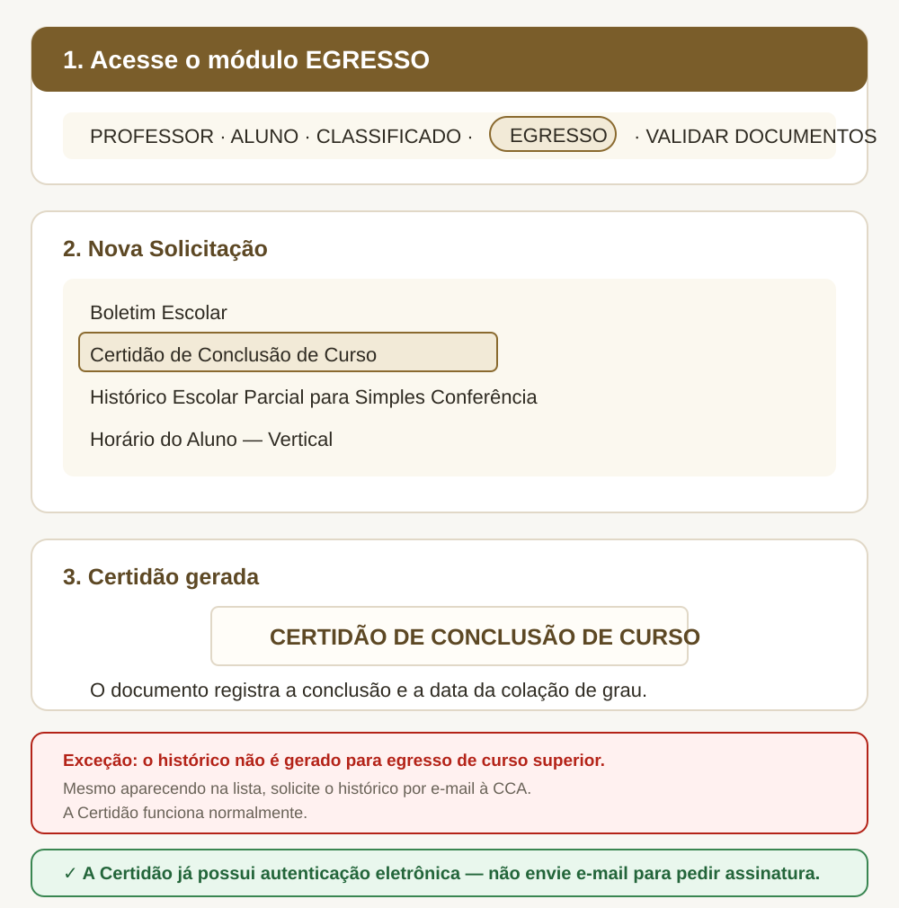

Certidão de Conclusão de Curso
Depois da colação de grau, entre pelo módulo EGRESSO. A Certidão de Conclusão comprova a integralização e registra a data da colação.
Documento pronto para uso. Os documentos emitidos diretamente pelo Q-Acadêmico já possuem assinatura ou autenticação eletrônica, com chave ou link para conferência. Por isso, não é necessário ir à CCA, pedir carimbo ou assinatura, nem solicitar outra via por e-mail. Baixe o PDF e encaminhe o próprio arquivo.

Histórico de curso superior
A opção não funciona para o egresso de curso superior. Mesmo que “Histórico Escolar Parcial para Simples Conferência” apareça na lista, a emissão não é concluída. Para obter o histórico, envie a solicitação para cca.baturite@ifce.edu.br.
No e-mail, informe nome completo, matrícula, curso, ano/período da conclusão e a finalidade do documento.
Não envie e-mail para assinar a Certidão. A solicitação por e-mail é necessária apenas porque o histórico do egresso superior não é gerado pelo sistema. A Certidão emitida no Q-Acadêmico já possui autenticação eletrônica.
Como emitir a Certidão
- Acesse o Q-Acadêmico e escolha EGRESSO.
- Entre com matrícula e senha.
- Clique em Solicitar Documentos.
- Clique em Nova Solicitação.
- Selecione Certidão de Conclusão de Curso.
- Clique em Solicitar Documento e baixe o PDF.
Enquanto os documentos definitivos não ficam prontos
A Certidão de Conclusão é um documento de uso provisório enquanto o Diploma Digital está em processamento. O histórico obtido pela CCA também atende necessidades imediatas até a disponibilização do histórico definitivo, observadas as exigências da instituição que receberá os documentos.